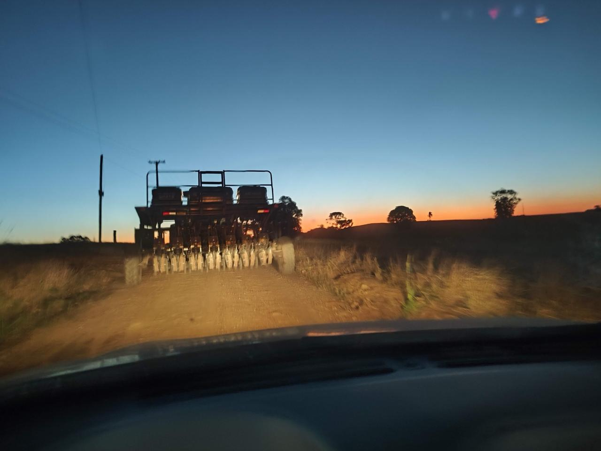
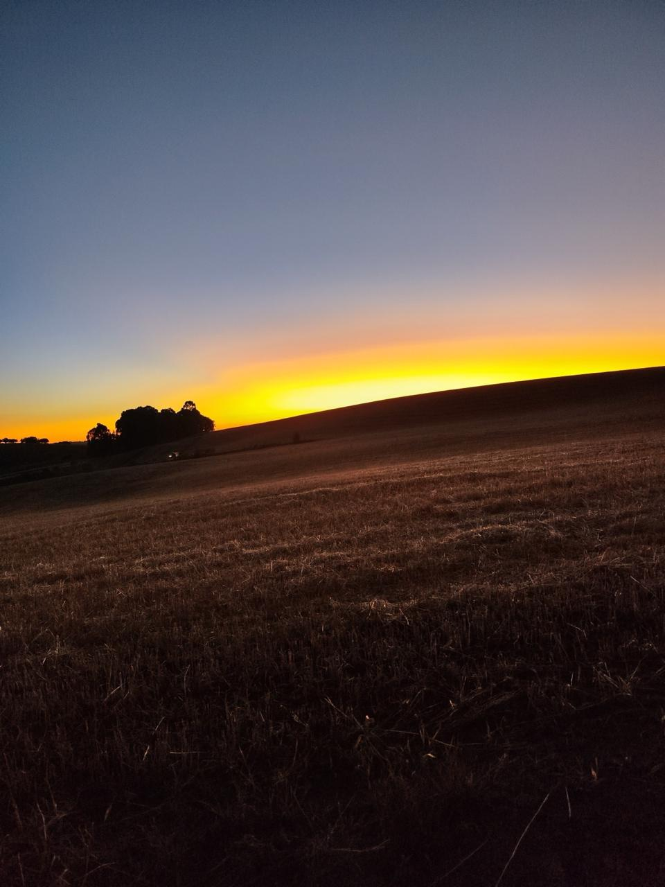
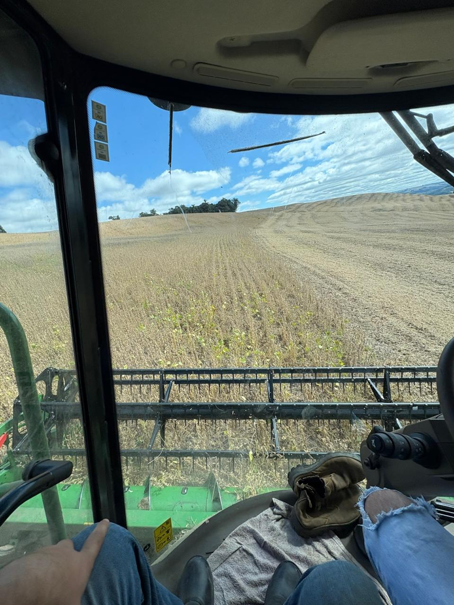
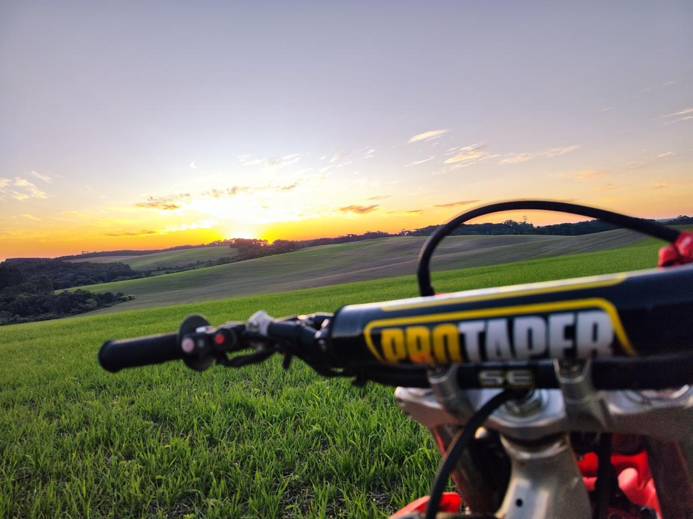
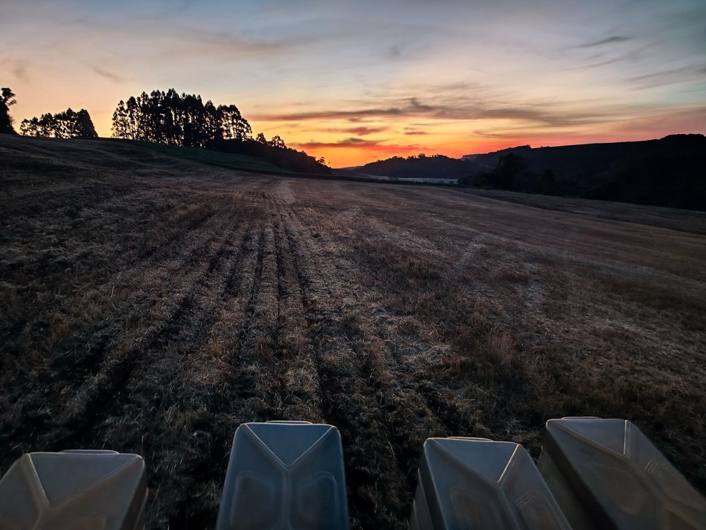

Histórias e momentos com os meus melhores amigos.
Minha familia trabalha com Lavoura
Abaixo eu separei fotos





Cada um deles tem uma personalidade única. Enquanto um é super agitado e adora destruir meias, o outro é extremamente calmo e passa o dia me acompanhando nas aulas do Web Lab.